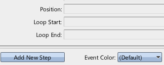
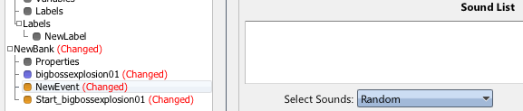
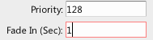

|
Cross Fading |
| Navigation |
Starting and stopping is all well and good, but we'd like to fade in another sound while the first is fading out. This isn't going to introduce very much, but it's likely to be so common that it deserves being singled out.
Requisite Terminology
New Terminology
None!
Steps

Double clicking an Asset in the Asset List selects it, and switches the current tab to Editor, effectively ensuring it is immediately editable. By adding a new step, the default Start Sound step has been added below the Control Sounds step that existed before.

Now the same event that stops the sound, will start a new one after starting the fade out for the first one. Dragging a sound to the pane adds it to the list of sounds the event will select from to play. Alternatively, you can add sounds via the button at the upper right of the sound pane in the Start Sound event step.

This sets the sound to start at max attentuation (-96 dB) and fade it in over 1 second.

It's not a very interesting crossfade, but the first instance of the sound has been faded out, and another instance started, fading in at the same time. Note that you can hit the stop button on the Timeline Tab to stop all sound playing in the tool.
 Stopping Sounds Stopping Sounds |
 Sound Designer User Guide Sound Designer User Guide |
 Ducking and Ramps Ducking and Ramps |

|
Miles Sound System 9.3b
E-mail miles3@radgametools.com for technical support. Copyright © 1991-2012 by RAD Game Tools, Inc. All Rights Reserved. |

|